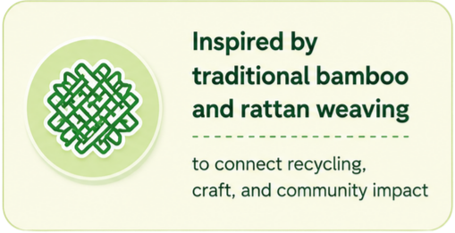

<section id="s04-voice">
  <video class="section-image" id="video-s04" muted playsinline onended="this.parentElement.classList.add('video-ended')">
    <source src="assets/section_4.mp4" type="video/mp4">
  </video>
  
  

  <!-- Cấu trúc grid 2x2 phân bố ở giữa -->
  <div class="s04-grid">
    
    
    
    
  </div>
</section>